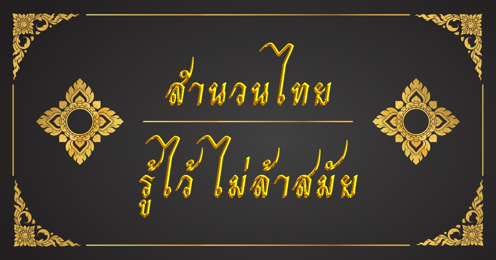

สำนวนไทย

สำนวนไทย คือถ้อยคำหรือข้อความที่กล่าวสืบต่อกันมาช้านานแล้ว มีความหมายไม่ตรงตามตัวหรือมีความหมายอื่นแฝงอยู่[1]หรืออาจกล่าวอีกนัยหนึ่งได้ว่า สำนวน คือถ้อยคำ กลุ่มคำ หรือความที่เรียบเรียงขึ้นในเชิงอุปมาอุปไมยโดยมีนัยแฝงเร้นซ่อนอยู่อย่างลึกซึ้ง แยบคาย เพื่อให้ผู้รับได้ไปตีความ ทำความเข้าใจด้วยตนเองอีกชั้นหนึ่ง ซึ่งอาจแตกต่างไปความหมายเดิมหรืออาจคล้ายคลึงกับความหมายเดิมก็ได้ สันนิษฐานว่า สำนวนนั้นมีอยู่ในภาษาพูดก่อนที่จะมีภาษาเขียนเกิดขึ้นในสมัยสุโขทัย โดยเมื่อพิจารณาจากข้อความในศิลาจารึกพ่อขุนรามคำแหงแล้ว ก็พบว่ามีสำนวนไทยปรากฏเป็นหลักฐานอยู่ เช่น ไพร่ฟ้าหน้าใส หมายถึง ประชาชนอยู่เย็นเป็นสุข